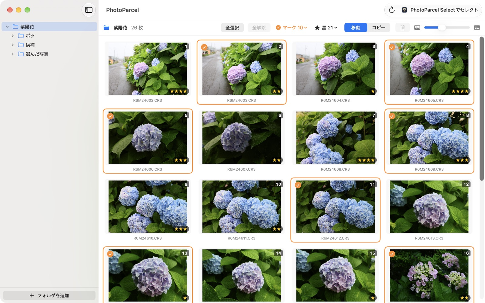
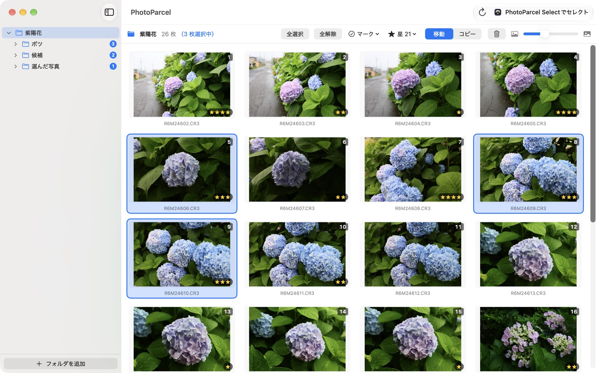
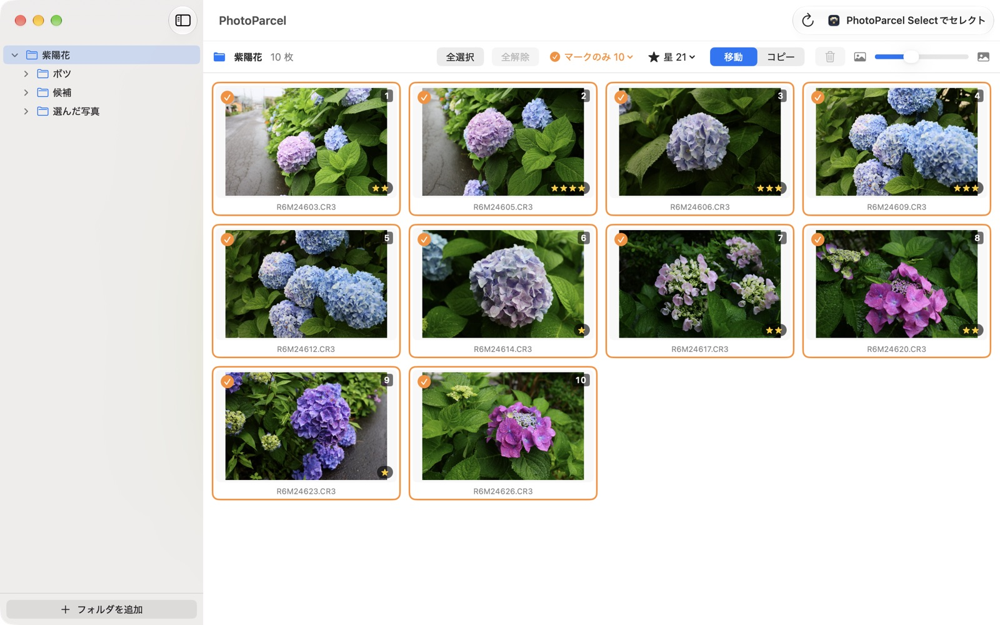
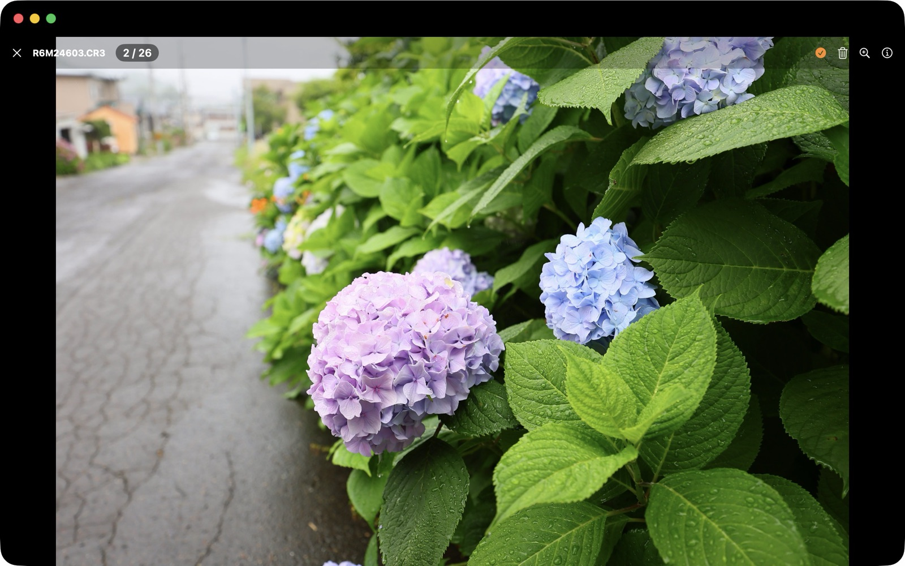
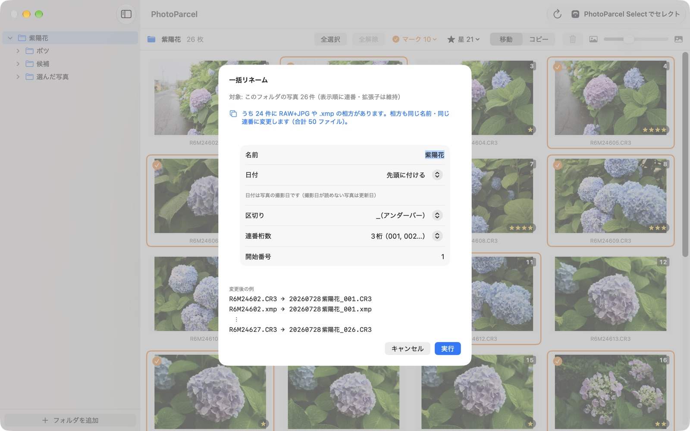
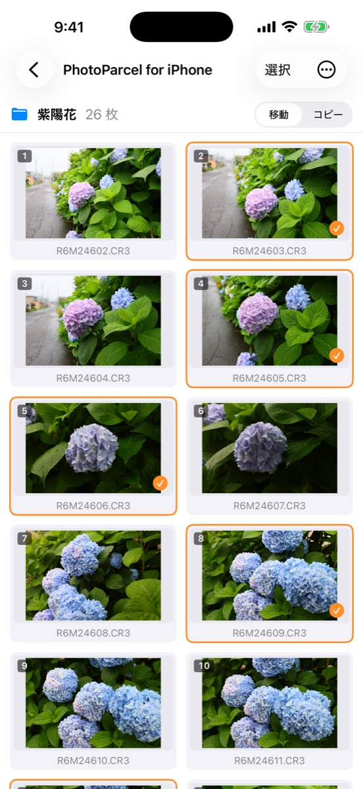
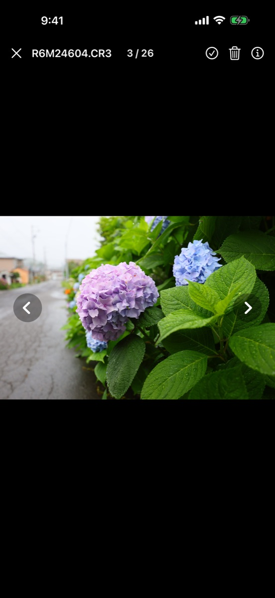

PhotoParcel
フォトパーセル
写真を、見ながらフォルダへ振り分ける。
仕上がった写真を、用途別のフォルダへ素早く振り分けて整理するアプリです。サムネイルを見ながらドラッグするだけ。よく使う行き先は数字キー1つで送れます。
- Mac
- iPhone
- iPad
- 一度の購入で全部の端末に
- 通信なし・データの収集なし

選んで、送って、片付ける
大量の写真を、目で確かめながら行き先ごとに分けていく。その作業を速く、間違えずに済ませるための道具です。
ドラッグで振り分け
フォルダを登録して、サムネイルを行き先のフォルダへドラッグするだけ。同じ名前があっても上書きせず、自動で番号を付けます。
数字キー1つで振り分け
よく使う行き先に 1〜9 を割り当てておけば、写真を選んで数字を押すだけで移動（コピーにも切り替え可）。iPad・iPhone はワンタップのボタンで。くわしく
マークで候補を絞る
「この中から数枚だけ」に使う目印。写真には何も書き込まないので、ほかのソフトからの見え方は変わりません。
星で絞り込む1.5 から
PhotoParcel Select などで付けた星（標準の XMP の星）を読んで、星3つ以上のように絞り込めます。星は読むだけで書き換えません。
RAW + JPG をひとまとめ
同じ名前の RAW と JPG を1枚として表示し、.xmp も含めて一緒に動かします。主な RAW 形式の表示に対応。
一括リネーム
名前・撮影日・連番でまとめて付け直し。RAW+JPG と .xmp は同じ名前にそろえます。開始番号も指定でき、実行後に取り消せます。
全画面で確かめる
全画面表示で1枚ずつ確認し、100% 表示や撮影データも。見ている1枚をそのまま振り分け・削除できます。
取り消しができる
移動・一括リネーム・ゴミ箱への削除は取り消せます。削除の前には、ペアを含めた合計のファイル数を必ず確認します。
数字キー1つで、行き先へ
よく使う移動先のフォルダに 1〜9 の数字を割り当てておくと、写真を選んで数字キーを押すだけで、そのフォルダへ送れます。ドラッグで行き先まで運ぶ必要がありません。

Mac
- 移動先のフォルダを右クリックして「数字キーを割当て」で、1〜9 から選びます。ツリーのフォルダに青い丸の数字が付きます。
- 写真を選んで（⌘ クリックで何枚でも）、数字キーを押します。選んだ写真がそのフォルダへ移ります。
- 全画面表示のときは、表示している1枚が移ります。見ながら1枚ずつ振り分けられます。
- ツールバーで「コピー」を選んでおくと、移動ではなくコピーになります。
iPhone・iPad
- 移動先のフォルダを長押しして「数字を割当て」で、1〜9 から選びます。
- 選択モードの下と全画面表示の下に、「①選んだ写真」のようなワンタップの振り分けボタンが並びます。
- 全画面表示では、振り分けたあと次の写真が自動で出ます。
- 画面上の「移動」「コピー」の切り替えで、コピーにもできます。
割り当ての解除は「整理」メニュー（iPhone・iPad は「…」メニュー）の「数字の割当て」から。同じ名前のファイルがあっても上書きせず、自動で番号を付けます。移動は取り消せます。
画面
横にすべらせると、ほかの画面も見られます。
Mac



iPhone


使い方
登録して、選んで、ドラッグ。
はじめに
- 「＋ フォルダを追加」で、整理したい写真フォルダを登録します（登録したフォルダは次回起動時も自動で復元されます）。
- ツリーでフォルダを選ぶと、そのフォルダの写真がサムネイルで表示されます。
- サムネイルを選択して、移動先フォルダへドラッグ＆ドロップするだけで振り分け完了です。
マークで候補を絞る
「この中から数枚だけ選びたい」というときに使う目印です。写真そのものには何も書き込みません。 サイドカーファイルを作ったり撮影データを書き換えたりしないので、ほかのソフトから見たときの見え方は変わりません。
- 写真を選んでマークを付けます。Mac は一覧の「マーク」メニューまたは M キー、iPad / iPhone は下部の「n枚にマーク」です。全画面表示中も、その1枚に付け外しできます
- マークの付いた写真だけを表示できます。候補を集めてから、その中でさらに絞り込めます
- マークは写真を移動したり名前を変えたりしても付いたまま残ります。アプリを終了しても残ります
- まとめて外すときは「マーク解除」（iPad / iPhone は「…」メニュー）から行えます
星で絞り込む1.5 から
PhotoParcel Select などで付けた星（写真の中、または .xmp サイドカーに書かれた標準の XMP の星）を読んで、星の付いた写真だけを表示できます。PhotoParcel は星を読むだけで、書き換えません。
- Mac は一覧の「星」メニューまたは「整理」メニューの「星で絞り込み」、iPad / iPhone は「…」メニューの「星で絞り込み」から、「星3つ以上」のように選びます
- 星の付いた写真には、サムネイルに黄色の星が出ます
- フォルダを変えると絞り込みは解除されます
数字キーで一気に振り分ける
よく使う移動先には 1〜9 の数字を割り当てておけます。割り当てたフォルダにはツリーに青い丸のバッジが付きます。
- Mac：フォルダを右クリックして「数字キーを割当て」。あとは写真を選んで数字キーを押すだけで移動します。全画面表示中は、表示している1枚が移動します
- iPad / iPhone：フォルダを長押しして「数字を割当て」。選択モードの下部と全画面表示の下部に「①選んだ写真」のようなワンタップの振り分けボタンが並びます。全画面表示では振り分けたあと次の写真が自動で表示されます
- 割り当ての解除は「整理」メニュー（iPad / iPhone は「…」メニュー）の「数字の割当て」から行えます
RAW + JPG と一括リネーム
- 同じ名前の RAW と JPG は1枚にまとめて表示され、「RAW+JPG」のバッジが付きます。移動するときは
.xmpサイドカーも含めて一緒に動きます（「整理」／「…」メニューで切り替えられます） - 一括リネームは、Mac は「整理」メニュー、iPad / iPhone は「…」メニューから。名前・撮影日・連番でまとめて付け直せます。RAW+JPG や
.xmpは同じ名前・同じ連番にそろえるので、ペアが崩れません - 連番の開始番号を指定できます。1 からではなく、途中の番号から通しで付けられます
- 実行前に対象の枚数と、最初と最後の新しい名前のプレビューが出ます。実行後に取り消すこともできます
よくある質問
フォルダが 🔒 表示になり中が見えません
アプリからのアクセス権がないフォルダです。「＋ フォルダを追加」からそのフォルダを選び直すとアクセスできるようになります。
RAW ファイルは表示できますか？
CR3 / CR2 / ARW / NEF / RAF / DNG など主要な RAW 形式の表示に対応しています（内蔵プレビューを利用した高速表示です。現像処理は行いません）。
写真をコピーではなく移動したい／移動ではなくコピーしたい
ドラッグ＆ドロップは「移動」です。iPad / iPhone の「n枚を移動...」から開く移動先の画面では、移動とコピーを切り替えられます。同名ファイルがある場合は「名前 2」のように自動で連番が付き、上書きはされません。
操作を間違えました。元に戻せますか？
移動・一括リネーム・ゴミ箱への削除は取り消せます。Mac は ⌘Z（やり直しは ⇧⌘Z）、iPad / iPhone は「…」メニューの「取り消す」から行えます。コピーは対象外です。
写真を削除できますか？
できます。Mac は一覧の「削除」ボタン・右クリックの「ゴミ箱に入れる」・Delete キー、iPad / iPhone は選択モードの「n枚を削除」です。全画面表示からも、見ている1枚を削除できます（上部のゴミ箱ボタン、Mac は Delete キーまたは D キー）。押すと必ず確認画面が出て、ペアを含めた合計ファイル数が示されます。ゴミ箱に対応していない保存先では完全に削除されるため、その旨が表示されます。
サムネイルに出ている番号は何ですか？
いま並んでいる順の通し番号です。全画面表示に出る「n / 総数」と同じ数え方なので、「何枚目を見ているか」が一覧と全画面で一致します。
写真の並び順を変えられますか？
既定は撮影日順です。名前・更新日・サイズの順にも変更でき、昇順と降順を切り替えられます（「整理」／「…」メニュー）。
全画面表示の操作方法は？
Mac はサムネイルをダブルクリック（または Return キー）で全画面表示。前後の写真へは ← → と ↑ ↓ のどちらでも送れます（画面の左右クリックでも移動します）。Return キー・ダブルクリック・Z キーで100%表示に切り替わり、100%表示中は写真をつかんでドラッグすると見たい場所へ動かせます。I キーで撮影データ、Esc で閉じます。閉じると、見ていた写真が選ばれた状態で一覧に戻ります。iPad / iPhone はタップで全画面表示、左右スワイプまたは左右のボタンで前後の写真、ピンチとダブルタップで拡大できます。
外付け SSD の写真も整理できますか？
できます。exFAT などのドライブでアクセス権を保存できない場合は「今回のみ」の登録になり、ツリーにオレンジの時計アイコンが表示されます。この場合は次回起動時にもう一度追加してください。
PhotoParcel Select との連携とは？
姉妹アプリ PhotoParcel Select（大量の RAW から採用カットを選び出すアプリ）がインストールされていると、Mac 版のツールバーに「PhotoParcel Selectでセレクト」ボタンが表示され、いま見ているフォルダをそのまま渡せます。Select 側からも同じように戻ってこられます。インストールされていない場合、ボタンは表示されません。